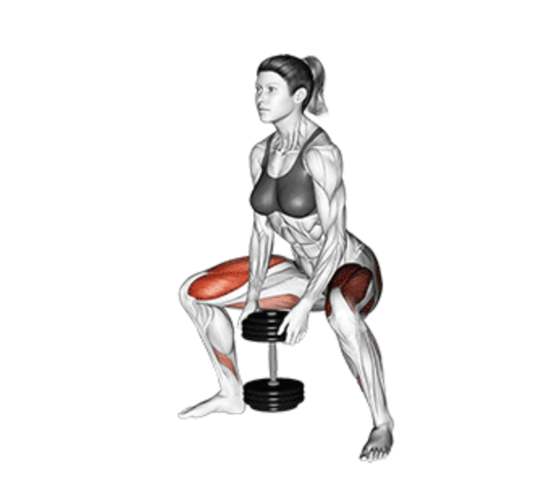
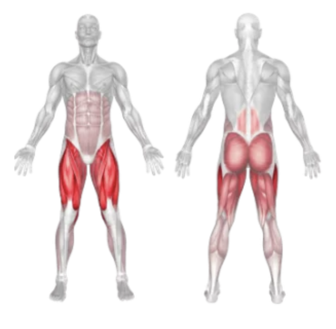
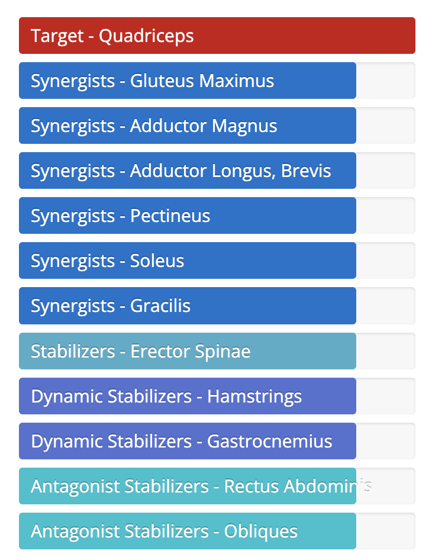

Sumo Squat Dumbbell
Setup
Choose a dumbbell of appropriate weight and hold it with both hands by one end.
Stand with your feet wider than shoulder-width apart and your toes pointed slightly outward.
Keep your back straight, chest up, and core tight throughout the movement.
Let the dumbbell hang between your legs with arms fully extended.

Execution
Lower:
Inhale and slowly squat down by bending at the knees and hips, lowering the dumbbell straight down between your legs.
Depth:
Lower yourself until your thighs are at least parallel to the ground or deeper, if flexibility allows.
Push:
Exhale and push through your heels to return to the starting position, squeezing your glutes at the top.
Tips for Effectiveness
Keep Knees Out:
Ensure your knees track in line with your toes throughout the squat.
Neutral Spine:
Avoid rounding or excessively arching your back.
Go Slow:
Perform controlled reps to engage glutes, hamstrings, and inner thighs.
Breathing:
Inhale on the way down, exhale on the way up.
Benefits of Sumo Squat Dumbbell
Glute and Inner Thigh Focus:
Targets glutes, adductors, and hamstrings more than traditional squats.
Improves Lower Body Strength:
Builds strength in legs and hips.
Core Stability:
Holding the dumbbell requires core engagement for balance.
Convenient:
Can be done with minimal equipment, ideal for home or gym workouts.
Muscles Worked in Sumo Squat Dumbbell


Do you want to change the language of this page?
English
Malayalam
Tamil
Hindi